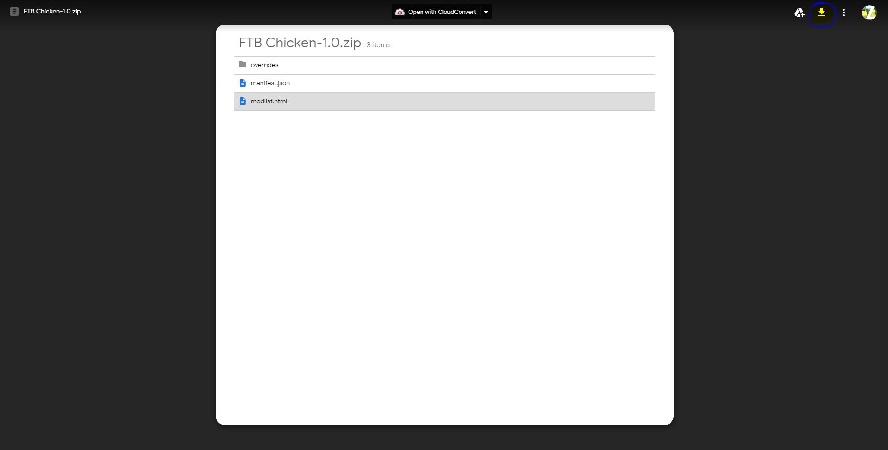
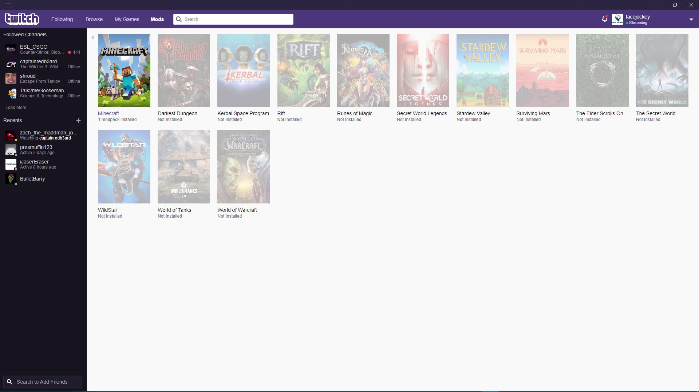
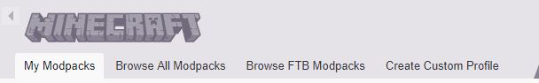
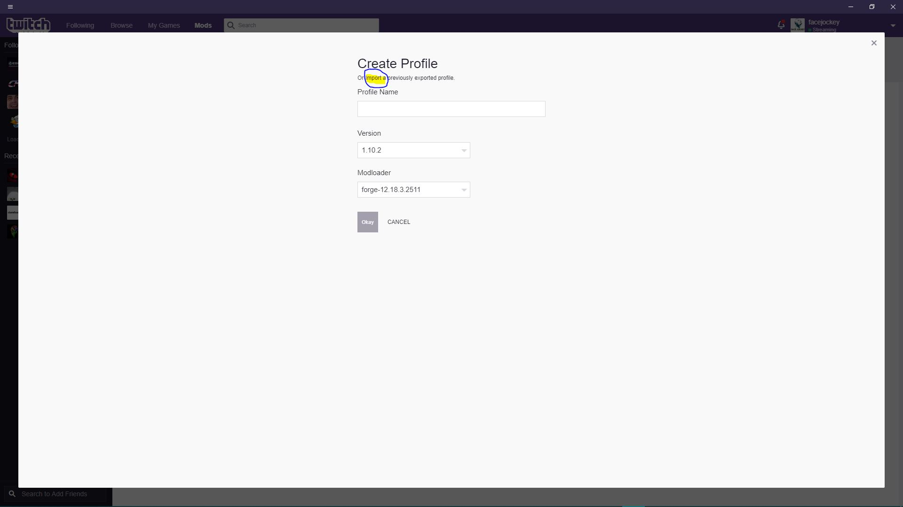
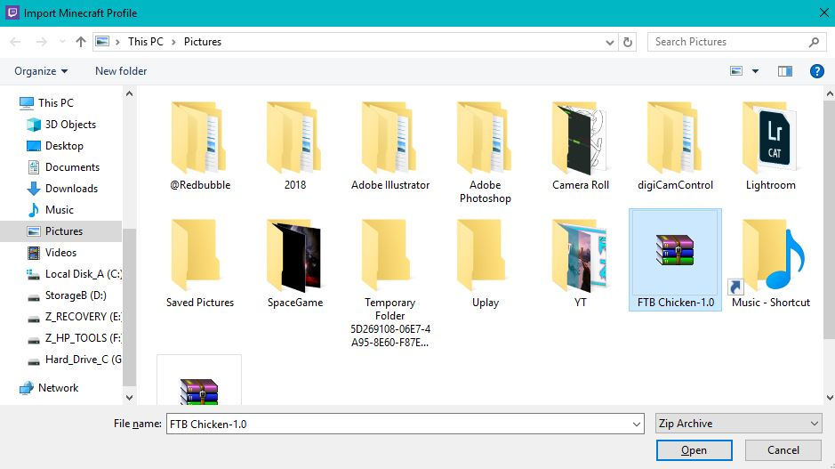
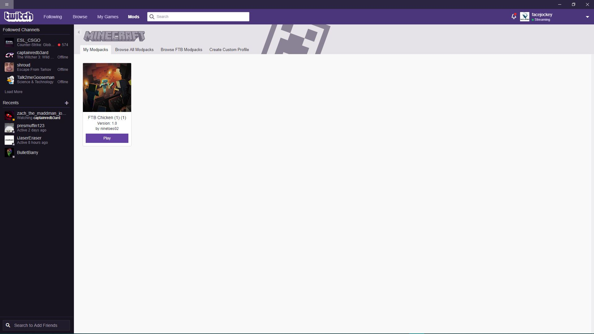

Downloads
A tutorial on how to install the chicken modpack for M.C. FTB
Start off with installing the Twitch Desktop Application here. This helps inject modpacks in the most a simple manner.
Next you can click this link to head over to the google drive download. In the top right click "download"
After you have finished the decent download, in order to inject you need to go back to the Twitch App and click "Mods" then select "Minecraft"
It will request that you link your Minecraft and Install "Forge" these files are safe and will not work without the installation. Once finished, you'll see this on your tool bar. Click "Create Custom Profile"
At this point you would want to click "Import"
It's going to pop-up with a file explorer that you must choose a folder to import. We want to locate the "FTB Chicken-1.0" Zip or Rar file.
Finally you should see a download pending or downloading as if of the momment. All you have to do is click launch and the MC launcher will default to the modpack. Thank-you!
